参考文章：
https://blog.csdn.net/u013005016/article/details/128997711
https://jellyfin.org/docs/general/clients/kodi/#jellycon
安装 jellyfin
-
首先要准备好一个空的共享文件夹，为后面做准备
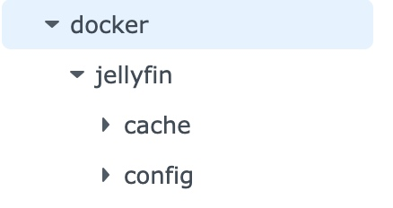 -
设置存放数据的文件夹的权限（忘了怎么设置的了，不设置的话）
-
首先下载好群晖的套件 Container Manager 用于下载和安装镜像文件
-
在注册表中搜索镜像
nyanmisaka/jellyfin（nyanmisaka是jellyfin的开发成员之一，此版本的镜像队支持硬解码和中文字幕） -
创建容器并设置部分参数（初始化没让设置的可以后面停止设置）
启动自动重启
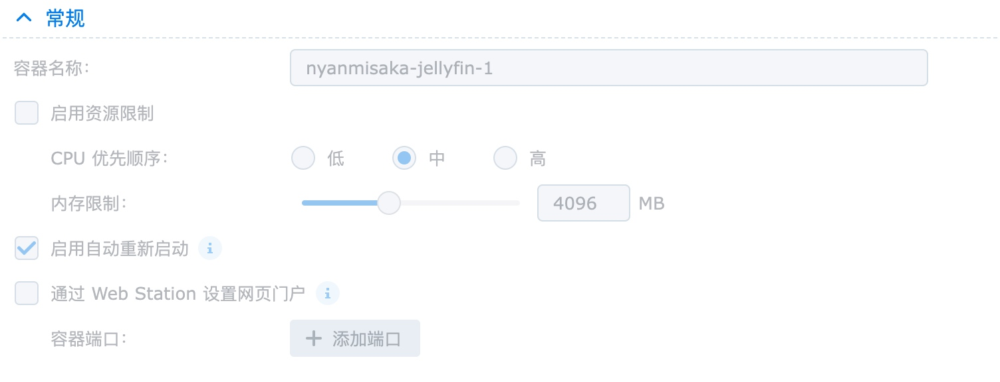
必须设置cache和config映射文件夹
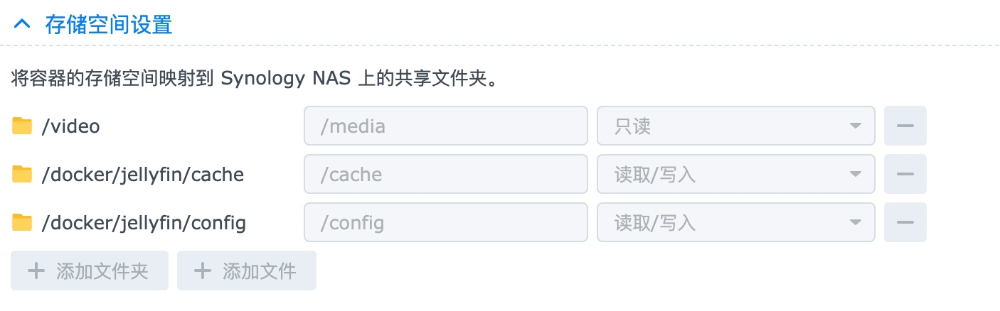
环境中添加一个DEVICES变量“/dev/dri/renderD128”（硬解需要）
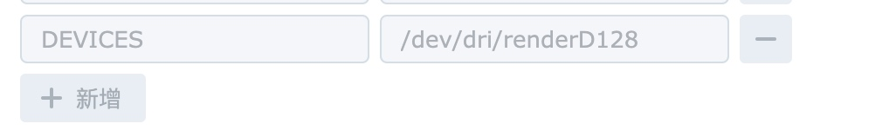
-
启动容器，从设置好的端口号访问进入
设置 jellyfin
添加媒体库
右上角小人->控制台->媒体库，添加媒体库，最好电影和电视剧分开放
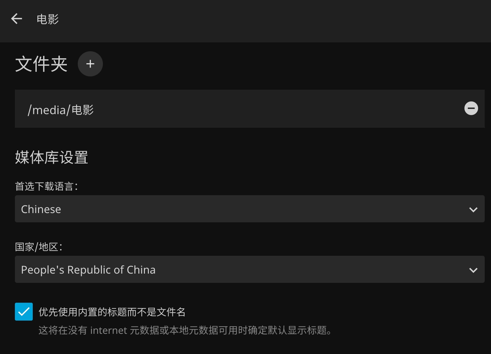
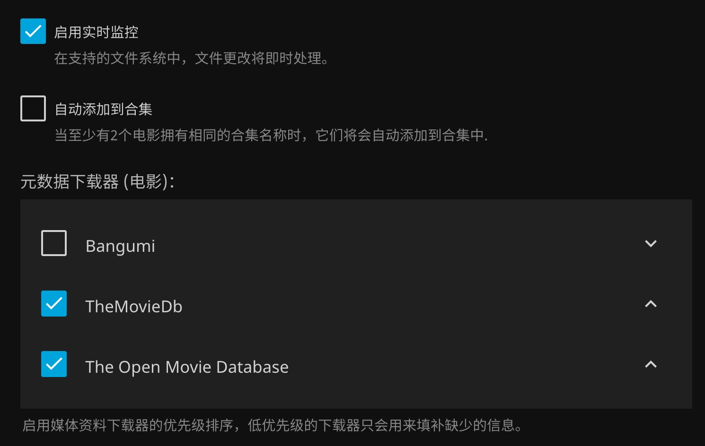
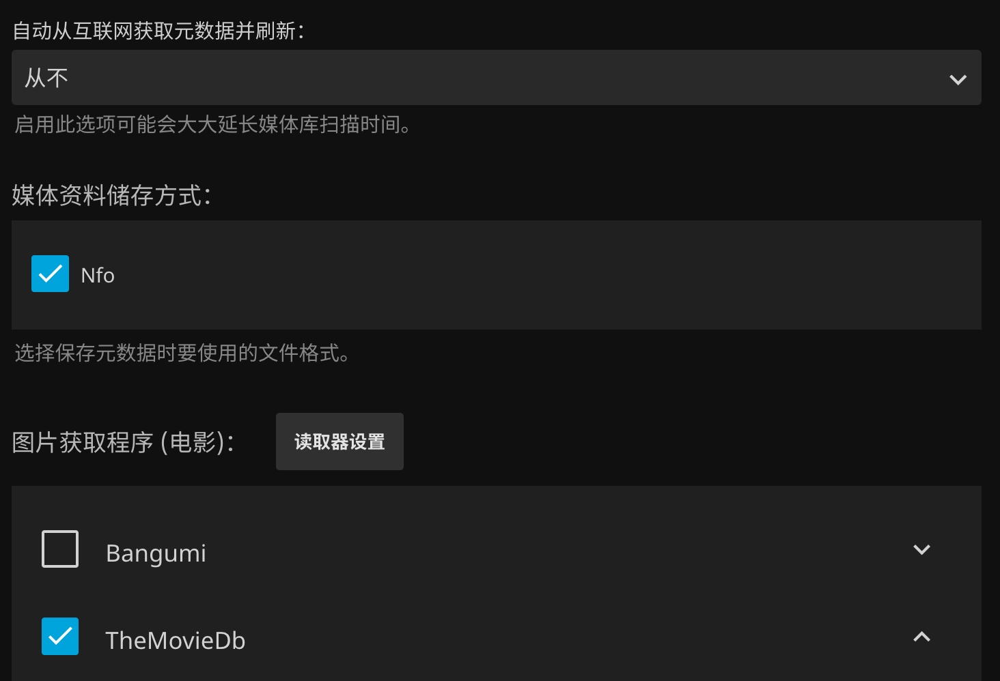
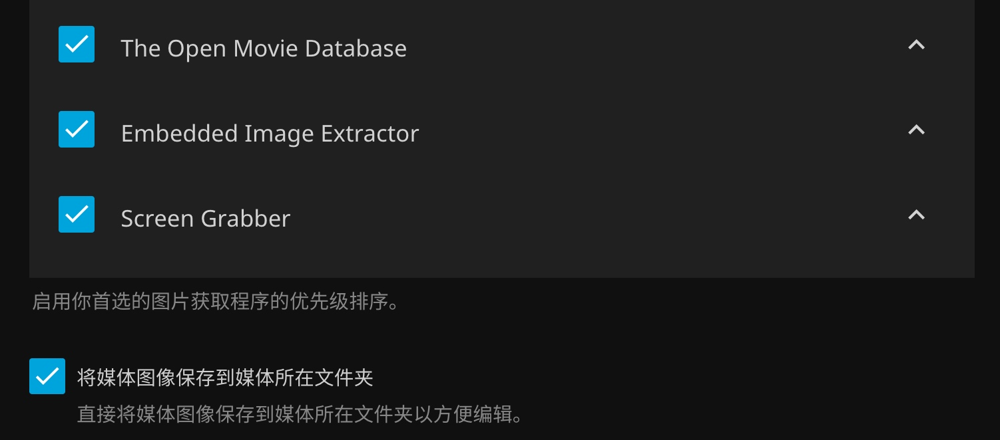
设置硬件加速
在控制台->播放中，设置如下：
需要根据自己的cpu型号确定可以编解码的类型进行勾选，12代以上的intel cpu需要开启低电压模式
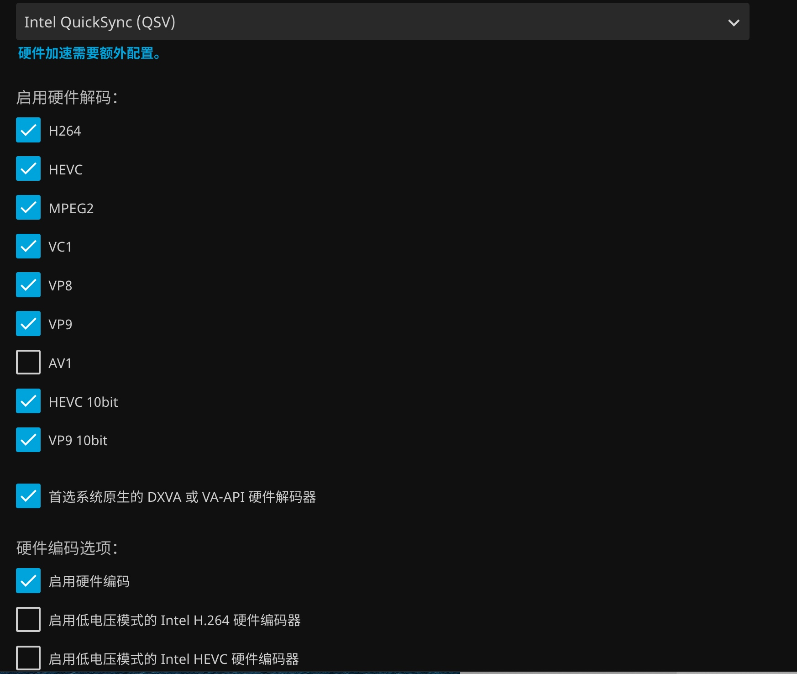
色调映射可以让HDR转成SDR后不那么灰色，选择Reinhard效果较好
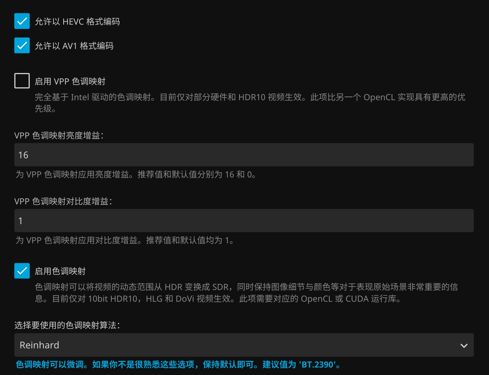
其他都可以默认，然后保存
设置QC远程访问 jellyfin
由于没有公网ip所以只能用群晖的QuickConnect进行远程访问
-
首先打开群晖的ssh（在控制面板->终端机/SNMP）
-
用电脑自带的命令行工具进行连接
ssh 用户名@192.168.x.x -
在群晖的nginx里加入一个jellyfin的服务
cd /usr/syno/share/nginx/conf.d/sudo vim dsm.jellyfin.confsudo密码就是用户密码，按i进行输入
location ^~ /jellyfin/ { proxy_pass http://localhost:8096; }按esc后输入
:wq保存退出 -
最后重启一下nginx服务
sudo systemctl restart nginx -
在jellyfin里设置一下url
控制台->联网->基础URL：
/jellyfin -
然后就可以远程通过 https://*.quickconnect.cn/jellyfin 访问了
infuse上挂载jellyfin
由于没有公网，所以只能使用内网IP进行连接（有公网可以替换公网IP）
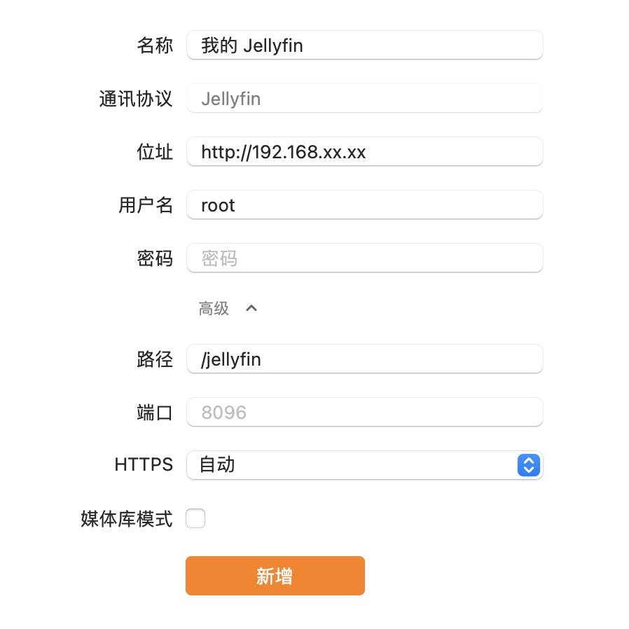
Kodi安装Jellyfin插件
安卓电视上没有infuse这种软件，所以用了开源的Kodi。也试了jellyfin-tv，但是播放总是有问题，还不如直接DLNA哈哈哈。Kodi的话是用jellyfin的插件库，有两种插件:'Jellyfin for Kodi'和'Jellycon'。更建议安装Jellyfin for Kodi，因为能显示好看的桌面，Jellycon不如电视自带的媒体中心哈。
安装Jellyfin插件库
设置 - 文件管理 - 添加源 - 输入'https://kodi.jellyfin.org' - 取名'Jellyfin Repo' - OK
注意一下kodi的输入法输入':'需要先选择其他符号
桌面 - 插件 - 从Zip压缩包安装 - 选择刚输入的源 - 安装'repository.jellyfin.kodi.zip'
如果不能安装，需要在设置里打开允许安装第三方源
安装Jellyfin for Kodi
桌面 - 插件 - 从库中安装 - 选择视频插件中的'Kodi Jellyfin Add-ons'
配置Jellyfin for Kodi
一般输入基础的hostxxx.xxx.xxx.xxx.xxx:8096就行了，但是如果是配置了基础url。就需要写成xxx.xxx.xxx.xxx.xxx:8096\baseurl，输入服务端设置的账户密码就能观看啦